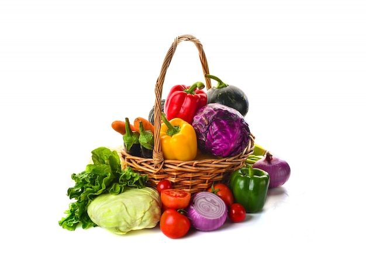

Transformation Agro-alimentaire
La transformation agroalimentaire consiste à convertir les matières premières agricoles en produits alimentaires finis, améliorant ainsi leur durée de conservation, leur sécurité alimentaireet leur valeur nutritionnelle.